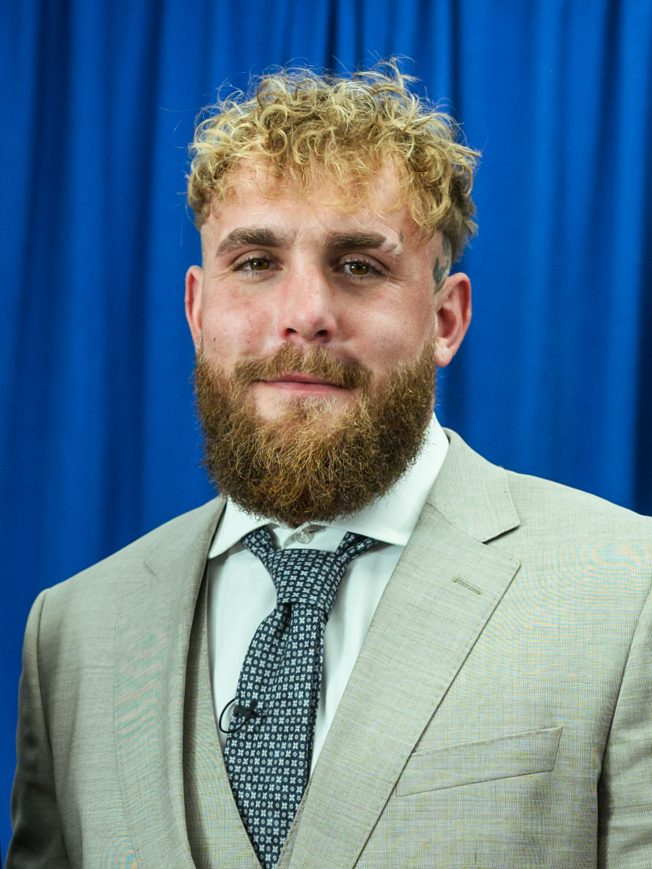

拒绝2亿美元诱惑！小鹰哈比卜斩钉截铁拒绝杰克·保罗的复出提议
这位保持全胜战绩的前UFC轻量级冠军坚称金钱无法激起他的战意，再次重申绝不复出。

前UFC轻量级冠军哈比卜·努尔马戈梅多夫（Khabib Nurmagomedov）断然拒绝了网红拳手兼赛事推广人杰克·保罗（Jake Paul）开出的2亿美元天价复出报价。在保罗于2026年11月18日周三发布的社交媒体视频中，这位保持不败战绩的俄罗斯传奇名将当场否决了重返八角笼的提议。
「你什么时候复出？2亿美元怎么样？」在PFL（职业格斗士联赛）赛事后台的一段视频对话中，保罗直截了当地问道。
「我为什么还要回来？」哈比卜回答道，「我身边有很多人，他们都是世界上最优秀的拳手。我已经没有任何需要证明的了。眼前根本没有对手，剩下的只有金钱，而金钱对我来说毫无动力。」

保罗随后试图说服他，称在自己的赛事旗下比赛将通过为运动员争取更好的经济待遇从而「彻底改变综合格斗运动」，但哈比卜丝毫不为所动。这段轻松幽默的互动最终以保罗开玩笑似地向这位摔跤大师尝试下潜抱摔而收场。
29胜0负：无可挑剔的格斗传奇
哈比卜于2020年10月在阿布扎比举行的UFC 254中宣布退役。在那场比赛中，他在第二回合以三角绞降伏了贾斯汀·盖奇（Justin Gaethje），将职业生涯战绩定格在完美的29战全胜。早在2018年4月，他击败埃尔·亚昆塔（Al Iaquinta）夺得空缺的UFC轻量级金腰带；同年10月，他在UFC 229与康纳·麦格雷戈（Conor McGregor）展开举世瞩目的巅峰对决，该场赛事创造了240万份PPV购买量的格斗界历史最高纪录。
2020年7月，在敬爱的父亲兼功勋教练阿卜杜勒马纳普·努尔马戈梅多夫（Abdulmanap Nurmagomedov）不幸离世后，哈比卜向母亲许下诺言：没有父亲在场角指导，自己绝不再踏入八角笼。2022年7月，哈比卜正式入选UFC名人堂当代时代之翼。

倾力执教：托起新一代冠军
哈比卜对于复出的坚决态度，同样体现在他对UFC首席执行官白大拿（Dana White）的回应上。白大拿曾在11月14日坦言，赛事方为促成哈比卜复出所做的所有努力均已告吹。
告别赛场后，哈比卜将全部精力投入到美国顶级踢拳道馆（AKA）的教练工作中，担任双量级冠军伊斯兰姆·马哈切夫（Islam Makhachev）和雏量级争冠热门乌马尔·努尔马戈梅多夫（Umar Nurmagomedov）的场角教练。尽管保罗在整合最有价值推广公司（MVP）与PFL后依然在四处招揽格斗巨星，但哈比卜再次向外界表明：单凭金钱，永远无法重新敲开他通往铁笼的大门。